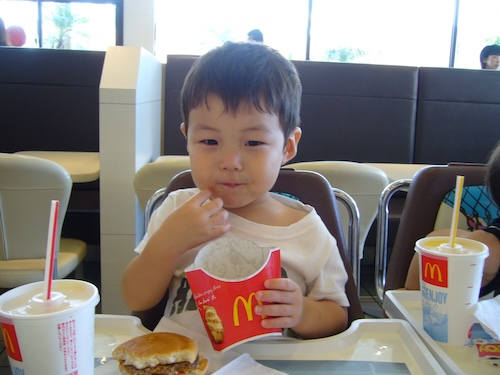
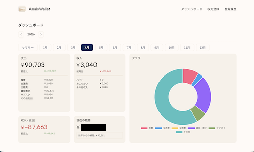
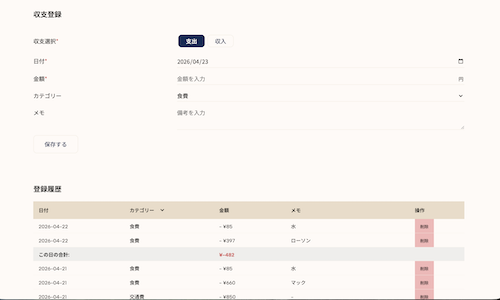

プロフィール

| 名前 | 堀場陸斗（ほりば りくと） |
|---|---|
| 大学 | 愛知工業大学 情報科学部 情報科学科 メディア情報専攻 2年 |
| 学籍番号：X25086 | |
| 生年月日 | 2006年8月7日 |
| 出身地 | 愛知県名古屋市 |
よろしくお願いします！
好きなもの/嫌いなもの
表にまとめてみました。
| カテゴリー | もの | 詳細 | |
|---|---|---|---|
| すきなもの | 食べ物 | すいか | 甘い |
| オールドファッションハニー（ミスド） | ミスドで一番おいしいと思っています | ||
| 音楽 | King Gnu | 三文小説、ねっこ など | |
| ヨルシカ | 五月は花緑青の窓辺から、ブレーメン など | ||
| 嫌いなもの | 眼科の眼圧測定 | 空気がいきなり出て怖いから | |
| 注射 | 痛いから | ||
好きなWebサイト
Appleのサイトは特にメニューのアニメーションが好きです。
作品
春休みの期間中に自分で使う家計簿もどきのwebアプリを作成しました。財布を分析するからAnalyWalletと名付けました。

